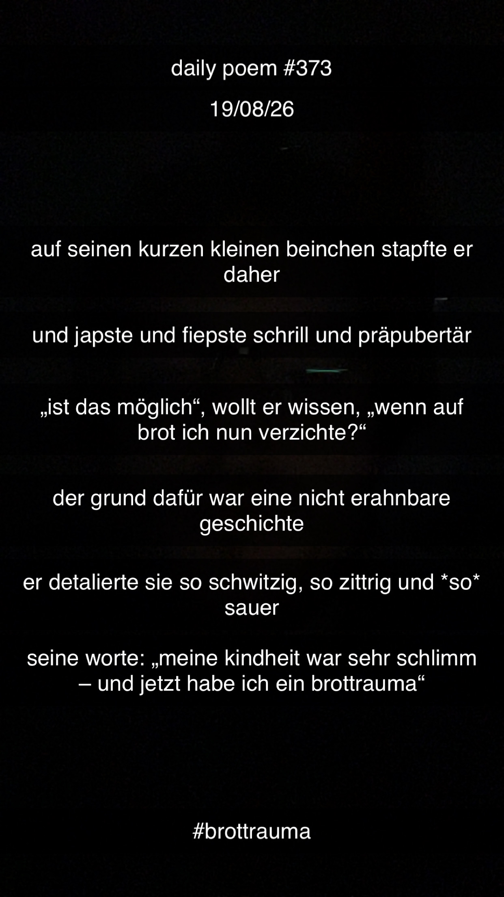

"Brottrauma"
[373]Auf seinen kurzen, kleinen Beinchen stapfte er daher,
Und japste und fiepste schrill und präpubertär –
"Ist das möglich", wollt' er wissen, "wenn auf Brot ich nun verzichte?"
Der Grund dafür war eine nicht erahnbare Geschichte;
Er detaillierte sie so schwitzig, so zittrig und so sauer –
Seine Worte: "Meine Kindheit war sehr schlimm – und jetzt habe ich ein Brottrauma!"
